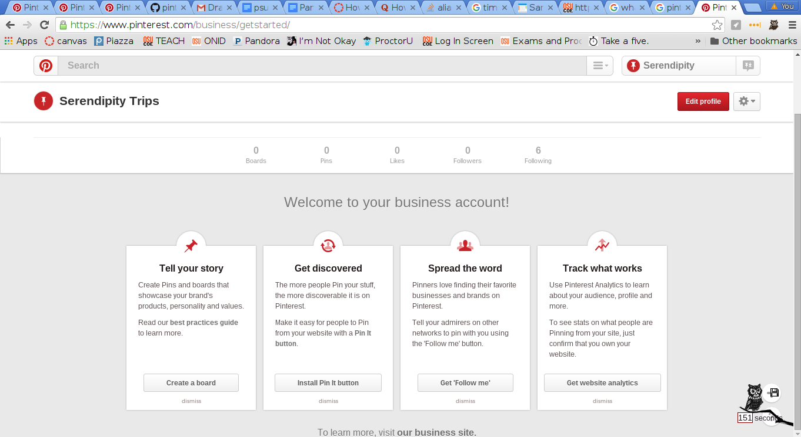
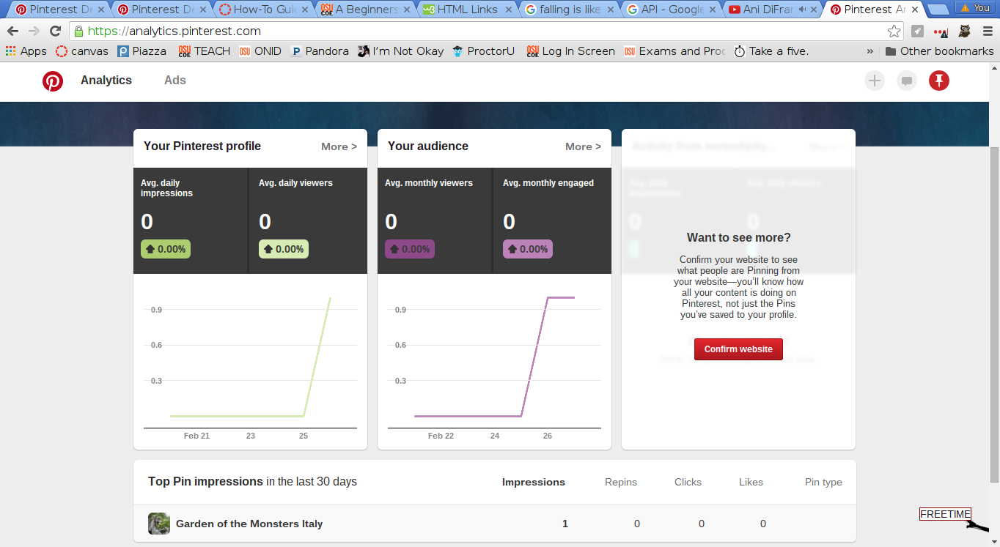

| Feature | API | SDK |
| Access method | Endpoints (users, boards, and Pins) | Methods (including one which allows you to utilize the endpoints API) |
| Querys (both allow 1000 calls per endpoint per hour for each unique user token.) | Every API response returns a header that gives you an update about rate limiting. | The SDK will let you know if there is more information by giving a hasNext response. |
| Authentication (Both use Oauth 2.0) | Requires getting an access code and then an access token uses permission scopes. | Has a authentication method which allows you to set authorization for a session. |
Another thing to consider is Business Analytics page
which is a seperate tool set which focuses on leveraging users clicks and follows to determine how successful your page or product is.
This tool is better for the business focus because it provides nice charts and is aimed at non-technical people.
There is a focus on 'click conversion' and lots of data about who, where, when and what in terms of how your businesses items are being accessed and saved.
If you are only using the API or SDK for information users activities you might consider this tool instead.

